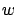
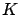
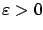
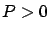

Next: 7.3.3 Riccati inequalities and
Up: 7.3 Riccati equations and
Previous: 7.3.1 gain
Contents
Index
We saw in the previous subsection how  can play the role of a disturbance input, in contrast with the standard LQR setting of Chapter 6 where, as in the rest of this book, it plays the role of a control input. Now, let us make the situation more interesting by allowing both types of inputs to be present in the system, the task of the control being to stabilize the system and attenuate the unknown disturbance in some sense. Such control problems fall into the general framework of robust control theory, which deals with control design methods for providing a desired behavior in the presence of uncertainty. (We can also think of the control and the disturbance as two opposing players in a differential game.) In the specific problem considered in this subsection, the level of disturbance attenuation will be measured by the
can play the role of a disturbance input, in contrast with the standard LQR setting of Chapter 6 where, as in the rest of this book, it plays the role of a control input. Now, let us make the situation more interesting by allowing both types of inputs to be present in the system, the task of the control being to stabilize the system and attenuate the unknown disturbance in some sense. Such control problems fall into the general framework of robust control theory, which deals with control design methods for providing a desired behavior in the presence of uncertainty. (We can also think of the control and the disturbance as two opposing players in a differential game.) In the specific problem considered in this subsection, the level of disturbance attenuation will be measured by the
 gain (or
gain (or
 norm) of the closed-loop system.
norm) of the closed-loop system.
The
control problem concerns itself with a system of the form
where
is the control input, 
is the disturbance input,  is the measured output (the quantity available for feedback), and
is the measured output (the quantity available for feedback), and  is the controlled output (the quantity to be regulated); for simplicity, we assume here that there are no feedthrough terms from
and
to
and
. The corresponding feedback control diagram is shown in Figure 7.4. We will first consider the simpler case of state feedback, obtained by setting
is the controlled output (the quantity to be regulated); for simplicity, we assume here that there are no feedthrough terms from
and
to
and
. The corresponding feedback control diagram is shown in Figure 7.4. We will first consider the simpler case of state feedback, obtained by setting  so that
so that  . In this case, we also restrict our attention to controllers that take the static linear state feedback form
. In this case, we also restrict our attention to controllers that take the static linear state feedback form  .
.
Figure:
 control problem setting
control problem setting
|
|
The control objective is to
stabilize the internal dynamics and attenuate
in the
sense. More specifically, we want to design the feedback gain matrix

so that the following two properties hold:
- The closed-loop system matrix
 is Hurwitz.
is Hurwitz.
- The
gain of the closed-loop system from
to
(or, what is the same,
the
norm of the closed-loop transfer matrix
 ) does not exceed a prespecified value
) does not exceed a prespecified value  .
.
Note that this is not an optimal control problem because we are not asking to minimize the gain  (although ideally of course we would like
to be as small as possible). Controls solving problems of this kind are known as suboptimal.
(although ideally of course we would like
to be as small as possible). Controls solving problems of this kind are known as suboptimal.
It follows from the results of the previous subsection--applied with the change of notation from  to
to
 , respectively--that to have property 2 (the bound on the
gain) it is sufficient to find a positive semidefinite solution of the Riccati inequality
, respectively--that to have property 2 (the bound on the
gain) it is sufficient to find a positive semidefinite solution of the Riccati inequality
 |
(7.27) |
To also guarantee property 1 (internal stability of the closed-loop system) requires slightly stronger conditions:  needs to be positive definite and the inequality in (7.27) needs to be strict. The latter condition can be encoded via the Riccati equation
needs to be positive definite and the inequality in (7.27) needs to be strict. The latter condition can be encoded via the Riccati equation
 |
(7.28) |
where  and
and

. (This implies
 which is the well-known Lyapunov condition for
which is the well-known Lyapunov condition for
 to be a Hurwitz matrix.) Next, we need to convert (7.28) into a condition that is verifiable in terms of the original open-loop system data. Introducing a matrix
to be a Hurwitz matrix.) Next, we need to convert (7.28) into a condition that is verifiable in terms of the original open-loop system data. Introducing a matrix  as another design parameter (in addition to
and
as another design parameter (in addition to
and
 ), suppose that there exists a solution
), suppose that there exists a solution 
to the Riccati equation
 |
(7.29) |
Then, if we let
 , a straightforward calculation shows that the feedback law
enforces (7.28) and thus achieves both of our control objectives. Conversely, it can be shown that if the system is stabilizable with an
gain less than
, then (7.29) is solvable for
.
, a straightforward calculation shows that the feedback law
enforces (7.28) and thus achieves both of our control objectives. Conversely, it can be shown that if the system is stabilizable with an
gain less than
, then (7.29) is solvable for
.
The general case--when the full state is not measured and the controller is a dynamic output feedback--is more interesting and more complicated. Without going into details, we mention that a complete solution to this problem, in the form of necessary and sufficient conditions for the existence of a controller achieving an
gain less than
, is available and consists of the following ingredients:
- Finding a solution
 of a Riccati equation from
the state feedback case.
of a Riccati equation from
the state feedback case.
- Finding a solution
 of another Riccati equation obtained from the first one by the substitutions
of another Riccati equation obtained from the first one by the substitutions
 and
and
 .
.
- Checking that the largest singular value of the product
 is less than
is less than  .
.
These elegant conditions in terms of two coupled Riccati equations yield a controller that can be interpreted as a state feedback law combined with an estimator (observer).
Next: 7.3.3 Riccati inequalities and
Up: 7.3 Riccati equations and
Previous: 7.3.1 gain
Contents
Index
Daniel
2010-12-20